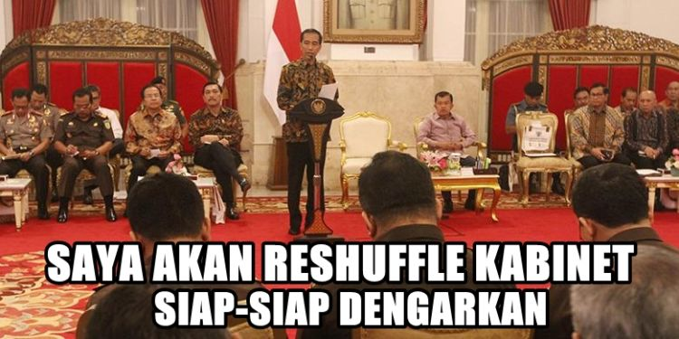
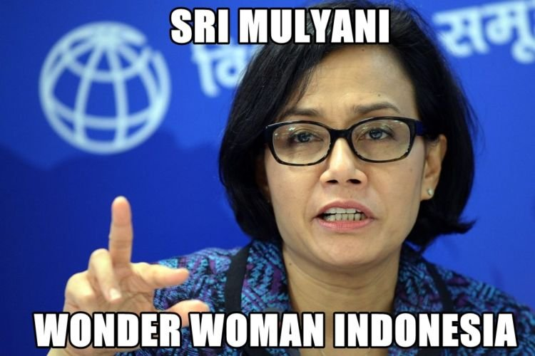

Presiden adalah orang yang memiliki jabatan tertinggi dalam negara republik Indonesia ini. Sebagai seorang presiden, Jokowi mempunya hak prerogatif untuk mengganti menteri-menterinya dalam menjalankan fungsinya sebagai kepala negara. Setelah sekian bulan yang lalu Presiden Indonesia melakukan reshuffle, kali ini jilid 2 nya pun terbit. Melalui akun twitter Joko Widodo sendiri, beliau menyampaikan bahwa reshuffle ini dilakukan agar seluruh jajaran pemerintahan dapat bekerja lebih kompak.
Perubahan kabinet untuk perbaikan dan penguatan kinerja. Supaya bisa kerja lebih kompak, lebih cepat, & lebih nyata
- jokowi via twitter @jokowi
Namanya juga netizen, kalau nggak buat meme pasti nggak seru, terkait dengan peristiwa diatas ini maka akhirnya mereka mengedit foto-foto menteri baru untuk dijadikan meme. Daripada pusing mikirin apa yang bisa kita berikan buat negara, yuk lihat meme-meme kocak berikut ini.


Indonesia Memilih...


